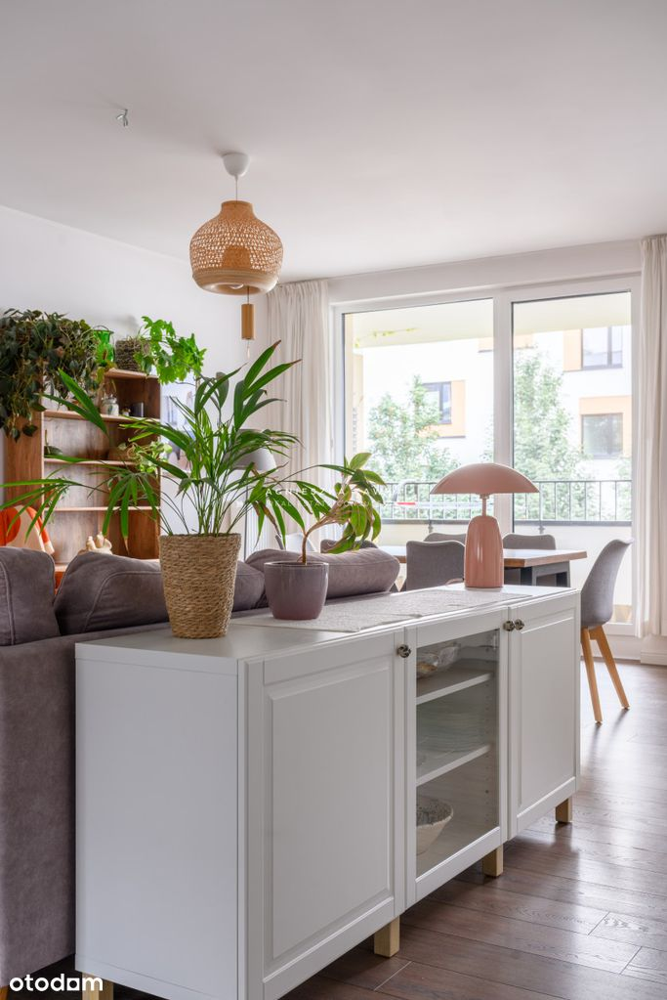
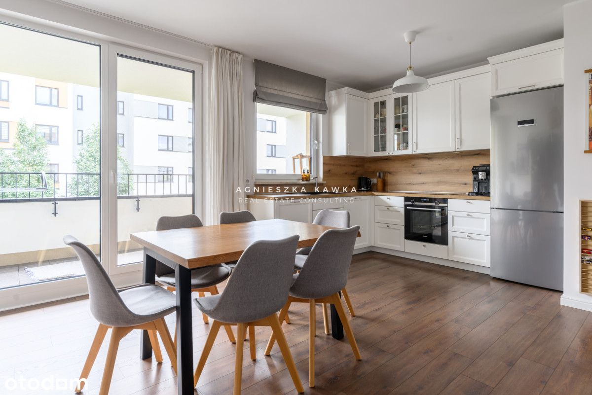
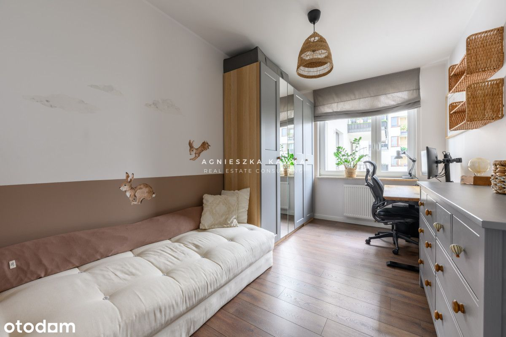
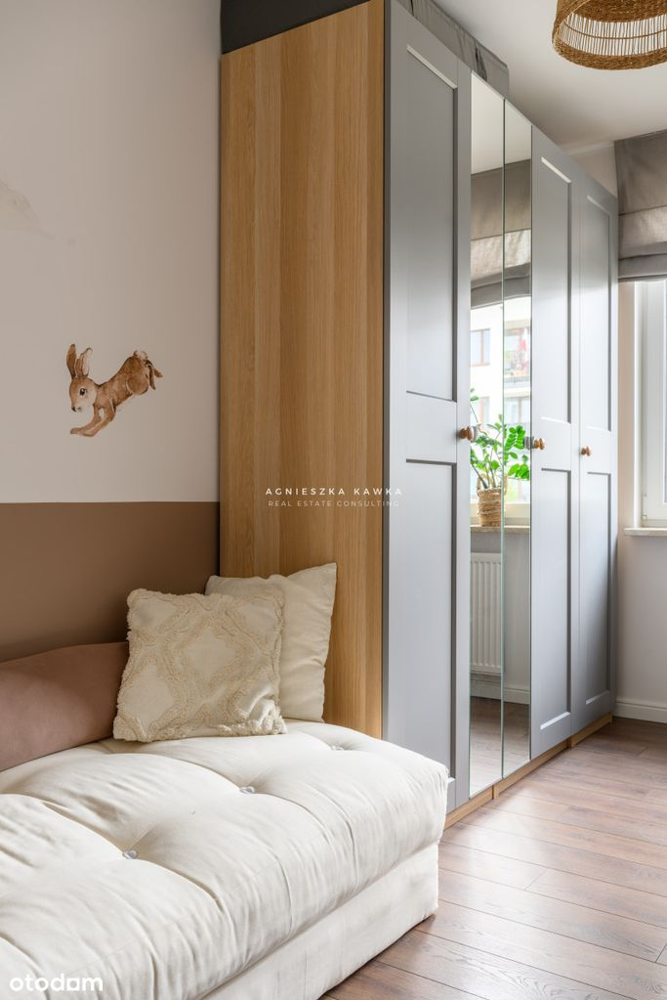
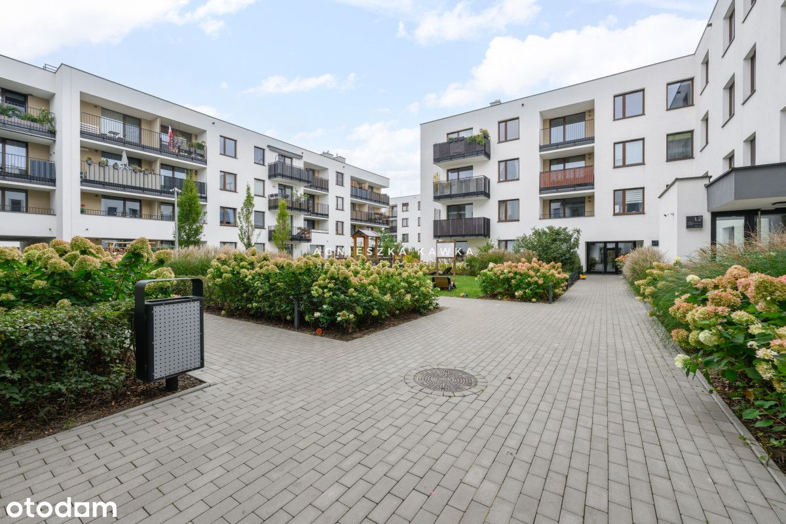
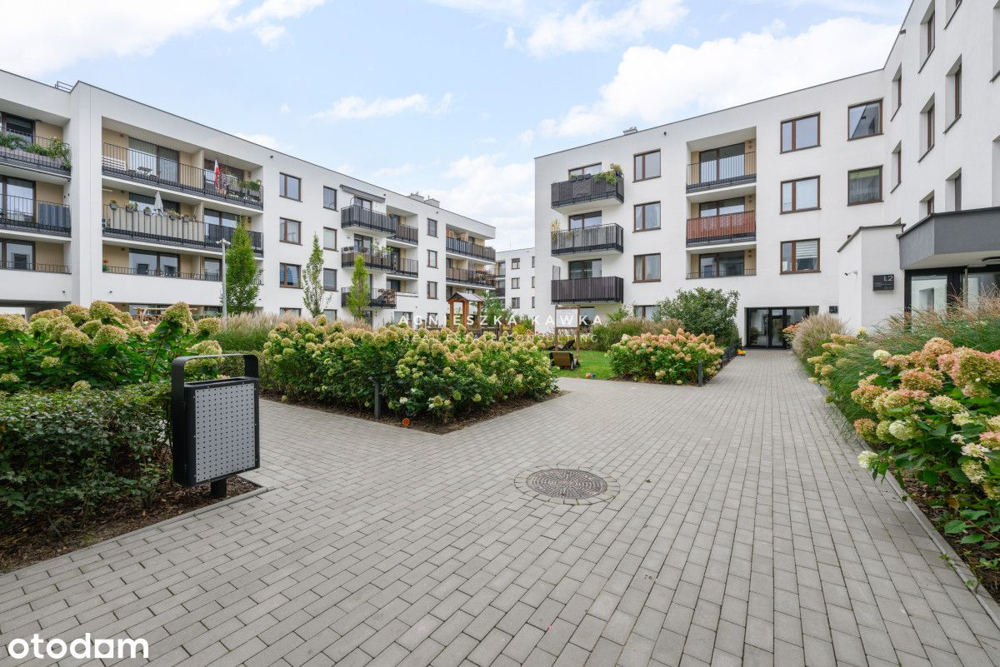

Osiedle Wilno – 3pokojowe mieszkanie z dużą loggią
Pohulanka, Warszawa Targówek
1 129 000 PLN
67.29 m2
3 pokoje
1 piętro
Przestronne i jasne 3-pokojowe mieszkanie z loggią, dwoma miejscami postojowymi i komórką lokatorską, położone na pierwszym piętrze nowoczesnego budynku przy ul. Pohulanka 7 w Warszawie, na lubianym i świetne zorganizowanym Osiedlu Wilno.
MIESZKANIE
Oferujemy jasne i funkcjonalne, 3-pokojowe mieszkanie o powierzchni 67,29 m², usytuowane na 1. piętrze budynku z 2021 roku. Do mieszkania przynależy loggia, a dwustronna ekspozycja północ-południe gwarantuje doskonałe doświetlenie wnętrza przez cały dzień.
Lokal jest w bardzo dobrym stanie i objęty rękojmią deweloperską, co daje poczucie bezpieczeństwa przy zakupie. Cały kompleks został zrealizowany przez renomowanego polskiego dewelopera, Dom Development, znanego z solidności i wysokiej jakości wykończenia.
UKŁAD POMIESZCZEŃ
- przestronny salon z aneksem kuchennym i wyjściem na balkon (ekspozycja południowy wschód),
- dwie ustawne sypialnie,
- łazienka,
- WC
- przedpokój z pojemną zabudową.
Mieszkanie ma przemyślany, funkcjonalny rozkład i jest gotowe do wprowadzenia bez dodatkowych nakładów finansowych.
BUDYNEK I OSIEDLE
Osiedle powstało w 2021 roku i charakteryzuje się nowoczesną, niską zabudową wykończoną w wysokim standardzie. Kameralna, ogrodzona przestrzeń z kontrolą dostępu, windą oraz zadbaną zielenią zapewnia poczucie bezpieczeństwa i komfortu.
W grudniu 2024 roku udział w drodze został przekazany miastu, co uporządkowało stan prawny inwestycji. Spokojne uliczki i niska intensywność zabudowy tworzą przyjemny, kameralny klimat, a przemyślane rozmieszczenie infrastruktury pozwala na wygodne codzienne funkcjonowanie.
INFRASTRUKTURA I UDOGODNIENIA
Osiedle Wilno zapewnia pełen dostęp do miejskiej infrastruktury. Na jego terenie znajduje się stacja kolejowa, która w połączeniu z II linią metra umożliwia szybkie dotarcie do centrum miasta.
Codzienne życie ułatwia bogata oferta handlowo-usługowa w obrębie osiedla, a osoby lubiące zakupy mogą korzystać z pobliskich centrów handlowych. W okolicy znajdują się także liczne placówki edukacyjne i medyczne, a miłośnicy aktywności na świeżym powietrzu docenią bliskość terenów zielonych, w tym Zalewu Bardowskiego.
Na osiedlu dostępne są m.in.:
- Przystanek autobusowy i boisko wielofunkcyjne
- Żłobek „Jaśkowa Kraina” oraz przedszkola
- Sklepy spożywcze, apteki, restauracje, piekarnie i salony kosmetyczne
- Stacja kolejowa Zacisze-Wilno - 600 m
W pobliżu:
- Ogrody Działkowe - 15 minut spacerem
- Szkoła Podstawowa nr 58 - 5 minut samochodem
- Zalew Bardowskiego otoczony lasem - 6 minut samochodem
- Stacja Metra Dworzec Wileński - 15 minut komunikacją miejską
STAN PRAWNY I DODATKOWE INFORMACJE
- Mieszkanie zakupione w kwietniu 2021 r.
- Pełna własność, bez obciążeń kredytowych.
- Lokal, miejsca garażowe i komórka lokatorska ujęte na jednej księdze wieczystej.
- Czynsz administracyjny: 1 100 zł
- Mieszkanie może być idealnym rozwiązaniem dla inwestora - obecni właściciele są skłonni pozostać w lokalu jako najemcy do września 2026 roku, gwarantując nowemu właścicielowi natychmiastowy dochód z najmu.
CENA
Cena mieszkania: 1 129 000 zł
Cena dwóch miejsc postojowych w garażu podziemnym (rodzinne, jedno za drugim): 65 000 zł (dodatkowo płatne)
Cena komórki lokatorskiej: 25 000 zł (dodatkowo płatne)
Zadzwoń i umów się na prezentację - to miejsce trzeba zobaczyć na żywo!

 
